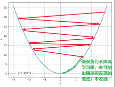
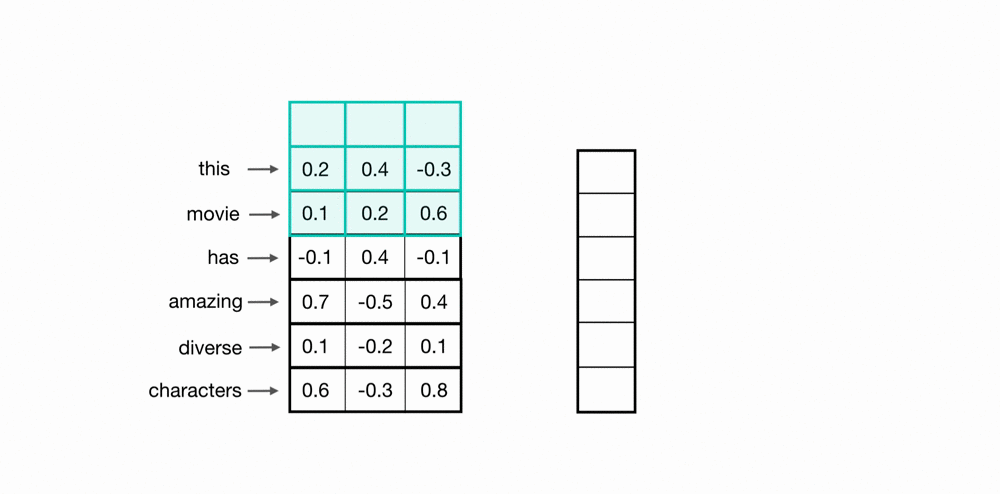
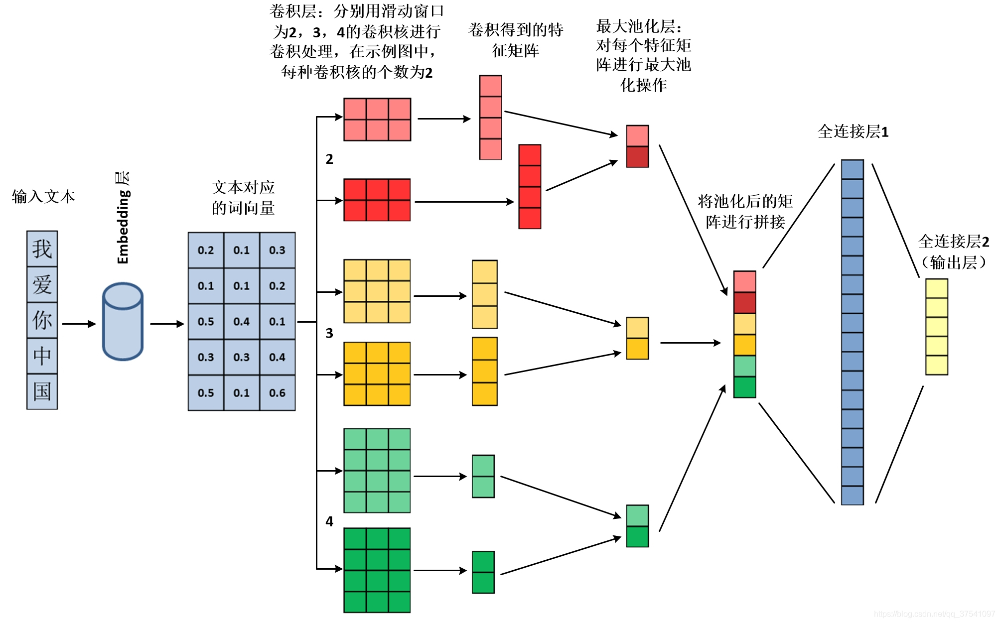

Fine-Tuning 是什么,有什么用?
- 模型训练（Training）
- 预训练（Pre-Training）
- 微调（Fine-Tuning）
- 轻量化微调（Parameter Efficient Fine-Tuning, PEFT）
三、什么是模型训练
我们希望找到一组参数$\omega$，使模型预测的输出$\hat{y}=F(x;\omega)$与真实的输出$y$，尽可能的接近
这里，我们（至少）需要两个要素：
- 一个数据集，包含$N$个输入输出的例子（称为样本）：$D={(x_i,y_i)}_{i=1}^N$
- 一个损失函数，衡量模型预测的输出与真实输出之间的差距：$\mathrm{loss}(y,F(x;\omega))$
3.1、模型训练本质上是一个求解最优化问题的过程
$\min_{\omega} L(D,\omega)$
$L(D,\omega)=\frac{1}{N}\sum_{i=1}^N\mathrm{loss}(y,F(x;\omega))$
3.2、怎么求解
回忆一下梯度的定义
从最简单的情况说起：梯度下降与凸问题
梯度决定了函数变化的方向，每次迭代更新我们会收敛到一个极值
$\omega_{n+1}\leftarrow \omega_n - \gamma \nabla_{\omega}L(D,\omega)$
其中，$\gamma<1$叫做学习率，它和梯度的模数共同决定了每步走多远
3.3、现实总是没那么简单（1）：在整个数据集上求梯度，计算量太大了
划重点：条件允许的情况下，Batch Size尽量大些
3.4、现实总是没那么简单（2）：深度学习没有全局最优解（非凸问题）
3.5、现实总是没那么简单（3）：学习率也很关键，甚至需要动态调整
划重点：适当调整学习率（Learning Rate），避免陷入很差的局部解或者跳过了好的解
3.6、神经网络的梯度怎么求（选学）
Chain Rule:
假设 $L(w)=f(g(h(w)))$
那么 $L’(w)=f’(g(h(w))) \cdot g’(h(w)) \cdot h’(w)$
蓝色的过程叫 Forward Pass，红色的过程叫 Backward Pass，整个过程叫 Backpropagation
四、求解器
为了让训练过程更好的收敛，人们设计了很多更复杂的求解器
- 比如：SGD、L-BFGS、Rprop、RMSprop、Adam、AdamW、AdaGrad、AdaDelta 等等
- 但是，好在最常用的就是 Adam 或者 AdamW
五、一些常用的损失函数
-
两个数值的差距，Min Square Error：$\ell_{\mathrm{MSE}}=\frac{1}{N}\sum_{i=1}^N(y_i-\hat{y}_i)^2$ (等价于欧式距离，见下文)
-
两个向量之间的（欧式）距离：$\ell(\mathbf{y},\mathbf{\hat{y}})=|\mathbf{y}-\mathbf{\hat{y}}|$
-
两个向量之间的夹角（余弦距离）：
-
两个概率分布之间的差异，交叉熵：$\ell_{\mathrm{CE}}(p,q)=-\sum_i p_i\log q_i$ ——假设是概率分布 p,q 是离散的
-
这些损失函数也可以组合使用（在模型蒸馏的场景常见这种情况），例如$L=L_1+\lambda L_2$，其中$\lambda$是一个预先定义的权重，也叫一个「超参」
思考： 你能找到这些损失函数和分类、聚类、回归问题之间的关系吗？
1
2
3
4
5
6
7
8
9
10
11
12
13
14
15
16
17
18
19
20
21
22
23
24
25
26
27
28
29
30
31
32
33
34
35
36
37
38
39
40
41
42
43
44
45
46
47
48
49
50
51
52
53
54
55
56
57
58
59
60
61
62
63
64
65
66
67
68
69
70
71
72
73
74
75
76
77
78
79
80
81
82
83
84
85
86
87
88
89
90
91
92
93
94
95
96
97
98
99
100
101
102
103
104
105
106
107
108
109
110
111
112
113
114
115
116
117
118
119
120
121
122
123
124
125
126
127
128
129
130
131
132
133
134
135
136
137
138
139
140
141
142
143
144
145
146
147
148
149
150
151
152
153
154
155
|
from __future__ import print_function
import torch
import torch.nn as nn
import torch.nn.functional as F
import torch.optim as optim
from torchvision import datasets, transforms
from torch.optim.lr_scheduler import StepLR
BATCH_SIZE = 64
TEST_BACTH_SIZE = 1000
EPOCHS = 5
LR = 0.01
GAMMA = 0.9
WEIGHT_DECAY = 1e-6
SEED = 42
LOG_INTERVAL = 100
# 定义一个全连接网络
class FeedForwardNet(nn.Module):
def __init__(self):
super().__init__()
# 第一层784维输入、256维输出 -- 图像大小28×28=784
self.fc1 = nn.Linear(784, 256)
# 第二层256维输入、128维输出
self.fc2 = nn.Linear(256, 128)
# 第三层128维输入、64维输出
self.fc3 = nn.Linear(128, 64)
# 第三层64维输入、10维输出 -- 输出类别10类（0,1,...9）
self.fc4 = nn.Linear(64, 10)
# Dropout module with 0.2 drop probability
self.dropout = nn.Dropout(p=0.2)
def forward(self, x):
# 把输入展平成1D向量
x = x.view(x.shape[0], -1)
# 每层激活函数是ReLU，额外加dropout
x = self.dropout(F.relu(self.fc1(x)))
x = self.dropout(F.relu(self.fc2(x)))
x = self.dropout(F.relu(self.fc3(x)))
# 输出为10维概率分布
x = F.log_softmax(self.fc4(x), dim=1)
return x
# 训练过程
def train(model, loss_fn, device, train_loader, optimizer, epoch):
# 开启梯度计算
model.train()
for batch_idx, (data_input, true_label) in enumerate(train_loader):
# 从数据加载器读取一个batch
# 把数据上载到GPU（如有）
data_input, true_label = data_input.to(device), true_label.to(device)
# 求解器初始化（每个batch初始化一次）
optimizer.zero_grad()
# 正向传播：模型由输入预测输出
output = model(data_input)
# 计算loss
loss = loss_fn(output, true_label) # F.nll_loss(output, target)
# 反向传播：计算当前batch的loss的梯度
loss.backward()
# 由求解器根据梯度更新模型参数
optimizer.step()
# 间隔性的输出当前batch的训练loss
if batch_idx % LOG_INTERVAL == 0:
print('Train Epoch: {} [{}/{} ({:.0f}%)]\tLoss: {:.6f}'.format(
epoch, batch_idx * len(data_input), len(train_loader.dataset),
100. * batch_idx / len(train_loader), loss.item()))
# 计算在测试集的准确率和loss
def test(model, loss_fn, device, test_loader):
model.eval()
test_loss = 0
correct = 0
with torch.no_grad():
for data, target in test_loader:
data, target = data.to(device), target.to(device)
output = model(data)
# sum up batch loss
test_loss += loss_fn(output, target, reduction='sum').item()
# get the index of the max log-probability
pred = output.argmax(dim=1, keepdim=True)
correct += pred.eq(target.view_as(pred)).sum().item()
test_loss /= len(test_loader.dataset)
print('\nTest set: Average loss: {:.4f}, Accuracy: {}/{} ({:.0f}%)\n'.format(
test_loss, correct, len(test_loader.dataset),
100. * correct / len(test_loader.dataset)))
def main():
# 检查是否有GPU
use_cuda = torch.cuda.is_available()
# 设置随机种子（以保证结果可复现）
torch.manual_seed(SEED)
# 训练设备（GPU或CPU）
device = torch.device("cuda" if use_cuda else "cpu")
# 设置batch size
train_kwargs = {'batch_size': BATCH_SIZE}
test_kwargs = {'batch_size': TEST_BACTH_SIZE}
if use_cuda:
cuda_kwargs = {'num_workers': 1,
'pin_memory': True,
'shuffle': True}
train_kwargs.update(cuda_kwargs)
test_kwargs.update(cuda_kwargs)
# 数据预处理（转tensor、数值归一化）
transform = transforms.Compose([
transforms.ToTensor(),
transforms.Normalize((0.1307,), (0.3081,))
])
# 自动下载MNIST数据集
dataset_train = datasets.MNIST('data', train=True, download=True,
transform=transform)
dataset_test = datasets.MNIST('data', train=False,
transform=transform)
# 定义数据加载器（自动对数据加载、多线程、随机化、划分batch、等等）
train_loader = torch.utils.data.DataLoader(dataset_train, **train_kwargs)
test_loader = torch.utils.data.DataLoader(dataset_test, **test_kwargs)
# 创建神经网络模型
model = FeedForwardNet().to(device)
# 指定求解器
optimizer = optim.SGD(model.parameters(), lr=LR, weight_decay=WEIGHT_DECAY)
# scheduler = StepLR(optimizer, step_size=1, gamma=GAMMA)
# 定义loss函数
loss_fn = F.cross_entropy
# 训练N个epoch
for epoch in range(1, EPOCHS + 1):
train(model, loss_fn, device, train_loader, optimizer, epoch)
test(model, loss_fn, device, test_loader)
# scheduler.step()
if __name__ == '__main__':
main()
|
如何运行这段代码：
- 不要在Jupyter笔记上直接运行
- 请将左侧的 exp.py 文件下载到本地
- 安装相关依赖包: pip install torch torchvision
- 运行：python3 exp.py
七、先介绍几个常用的超参
7.1、过拟合与欠拟合
奥卡姆剃刀： 两个处于竞争地位的理论能得出同样的结论，那么简单的那个更好。
防止过拟合的方法（1）： Weight Decay
$J(\omega)=L(D,\omega)+\lambda|\omega| \Rightarrow \nabla_{\omega}J=\nabla_{\omega}L + \frac{1}{2}\lambda\omega$
- 惩罚参数的复杂性（$L_2$-norm）：等价与在梯度上减去参数本身（乘一个小数作为权重）
- Weight Decay 就是前面那个权重$\lambda$
防止过拟合的方法（2）： Dropout
- 我们在前向传播的时候，概率性的（临时）删除一部分神经元，这样可以使模型泛化性更强，因为它不会太依赖某些局部的特征
- 这样训练$N$次，等价于训练$N$不同的网络，再取平均值；$N$个网络不会同时过拟合于与一个结果，这样平均值的方式能有效减少过拟合的干扰。
7.2、学习率调整策略
- 开始时学习率大些：快速到达最优解附近
- 逐渐减小学习率：避免跳过最优解
- NLP 任务的损失函数有很多“悬崖峭壁”，自适应学习率更能处理这种极端情况，避免梯度爆炸。

几种常用的学习率调整器
防止过拟合的方法（3）： 学习率 Warm Up
先从一个很小的学习率逐渐上升到正常学习率，在稳步减小学习率
- 其原理尚未被充分证明
- 经验主义解释：减缓模型在初始阶段对 mini-batch 的提前过拟合现象，保持分布的平稳
- 经验主义解释：有助于保持模型深层的稳定性
应用场景： (1) 当网络非常容易nan时候；(2) 如果训练集损失很低，准确率高，但测试集损失大，准确率低.
8.1、文本卷积神经网络 TextCNN
一个窗口的卷积和Pooling过程


不同大小的窗口分别做卷积和Pooling，结果拼在一起
- 参数量较少、好训练、算力要求低
- 适合文本分类问题
- 善于表示局部特征（卷积窗口），不擅长表示长上下文依赖关系
8.2、循环神经网络 RNN
首先：输入是一个序列
但这种简易 RNN 有很多问题，最大问题是随着序列长度增加，梯度消失或爆炸
LSTM 和 GRU 通过「门」来控制上文的状态被记住还是遗忘，同时防止梯度消失或爆炸
以LSTM为例：
8.3、Attention (for RNN)
给定当前的输入，上文的一些信息比另一些重要
于是设计一个可微的函数就可以把它加入到网络中来试试，反正也没有全局最优解
- 对当前 token $t$的上文的每个 token $i$计算上述 score
- 将这些 score 做 softmax 得到权重$\alpha_{t,i}$
- 将上文的隐层状态乘以其权重并相加$c_t=\sum_i\alpha_{t,i}h_i$
- 将$c_t$与当前 token 的状态拼接在一起$s_t=\mathrm{concat}(h_t,c_t)$
- 激活输出$y_t=\sigma(s_t)$
Transformer 是一种流行的神经网络架构,主要用于自然语言处理(NLP)任务。其关键特点是:
基于注意力机制(Attention Mechanism)
Transformer 通过 Attention Mechanism 来建模词语之间的关联,可以捕捉句子中长距离依赖关系。
编码器-解码器(Encoder-Decoder)结构
Transformer 由编码器和解码器组成。编码器负责分析输入序列,解码器负责生成输出序列。
全连接网络,没有RNN或CNN结构
Transformer 没有循环神经网络(RNN)或卷积神经网络(CNN),而是完全基于注意力机制的全连接网络,计算效率更高。
可并行计算
Transformer 的编码器和解码器都可以通过并行计算实现,计算速度很快。
Transformer 的典型应用包括:
机器翻译:如 Google 的 Neural Machine Translation
文本生成:如 GPT、BERT 等语言模型
语音识别:如 Speech Transformer
图像处理:如 Vision Transformer(ViT)
综上,Transformer 通过Attention机制捕捉语义信息,编码器-解码器结构完成序列转化,采用全连接网络并支持并行计算,是一种计算效率高且性能优异的神经网络结构,被广泛应用于NLP和其他领域。